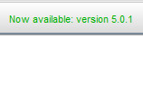

Installation
Tracker includes its own bundled runtime Java and open-source video engine Xuggle. You can always use a separate JRE to run Tracker by choosing it in Tracker Preferences.
1. Install Tracker (includes Java and Xuggle)
- Download the tracker installer for your platform (Windows, Mac OS X, or Linux) from Tracker's home page at https://physlets.org/tracker/.
- Follow the Installer Help instructions at https://physlets.org/tracker/installers/installer_help.html.
2. Launch Tracker
- Windows: choose the Tracker item in the Start Menu.
- OS X: double-click the Applications/Tracker app.
- Linux: search for and double-click the Tracker application.
3. Upgrade Tracker when new versions are released
- When a new version is available, a notification is displayed on the toolbar. To upgrade, click the notification and choose Upgrade Now from the popup menu. For more information about the new version, choose Learn More.


- Most upgrades are instant: the new version or upgrade installer is downloaded and launched immediately. Some upgrades may require that you download a new installer from the Tracker website. Upgrades may include Tracker itself, Java, Xuggle and/or other components.
Congratulations! To start using Tracker, see getting started.